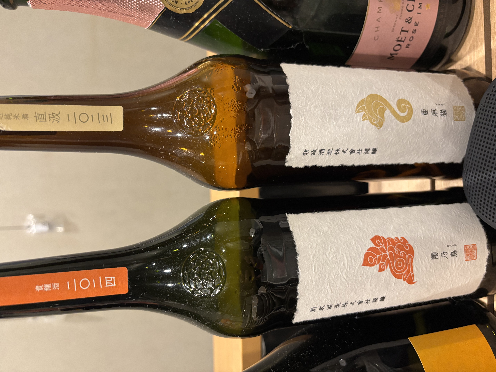
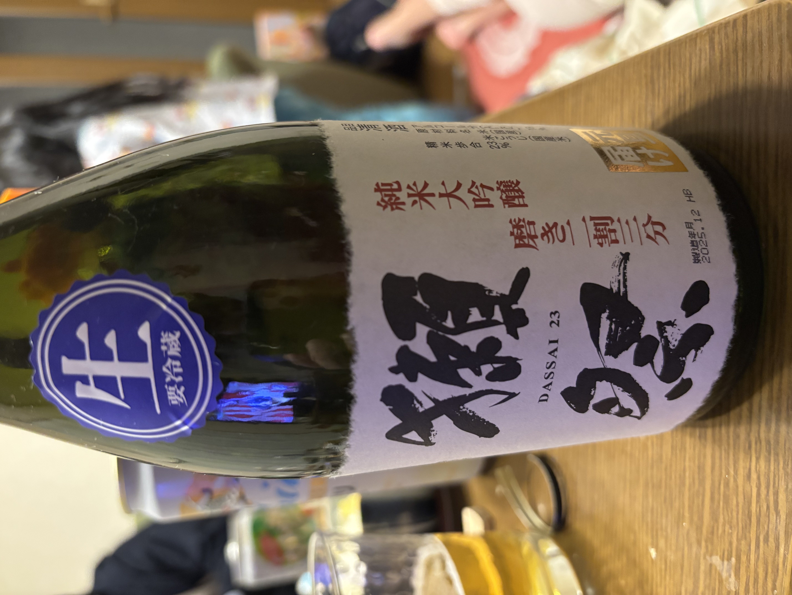
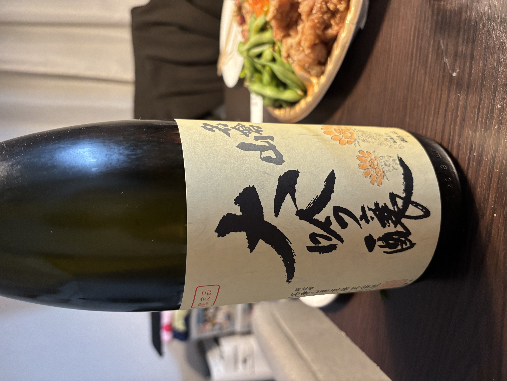
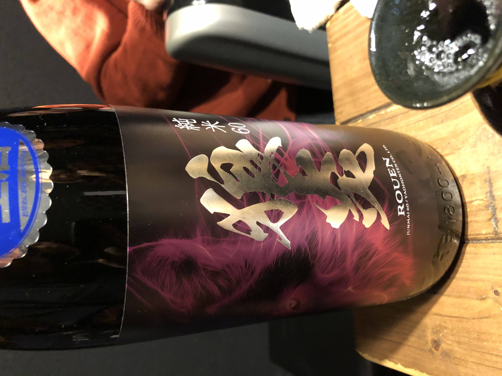
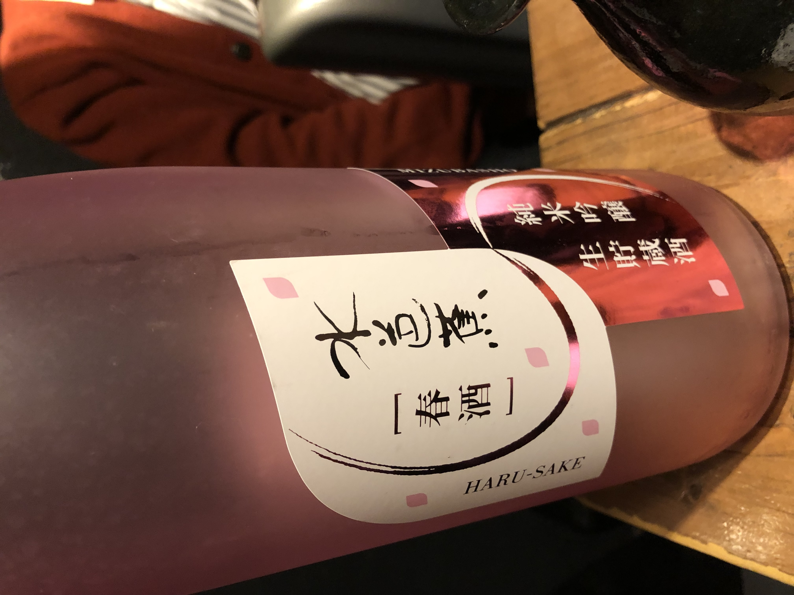
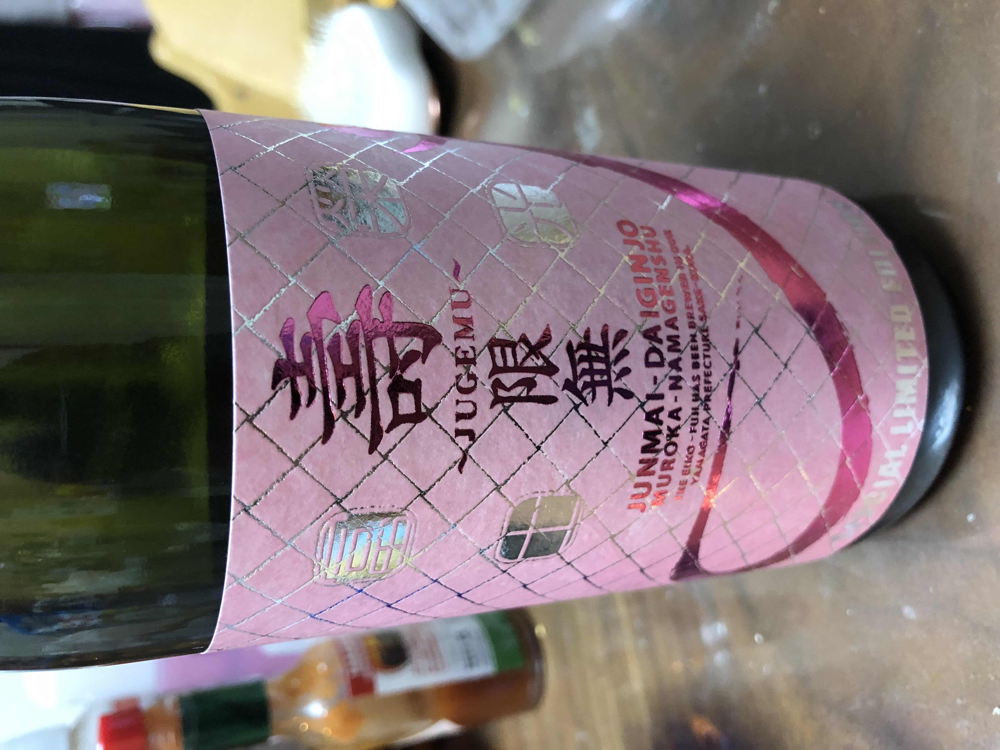
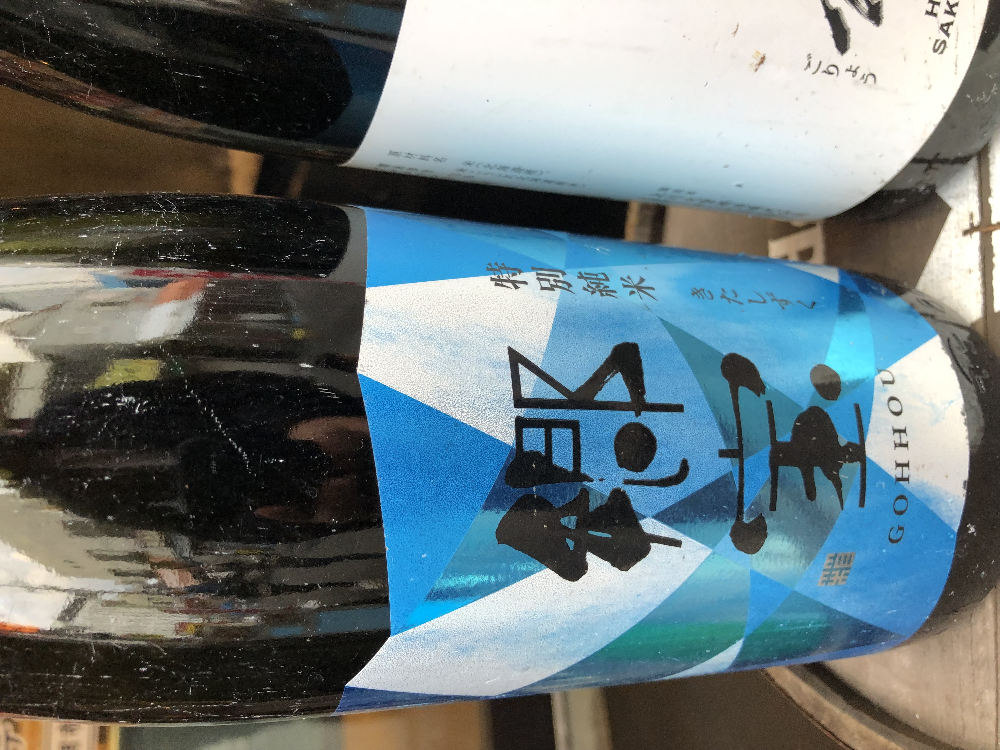
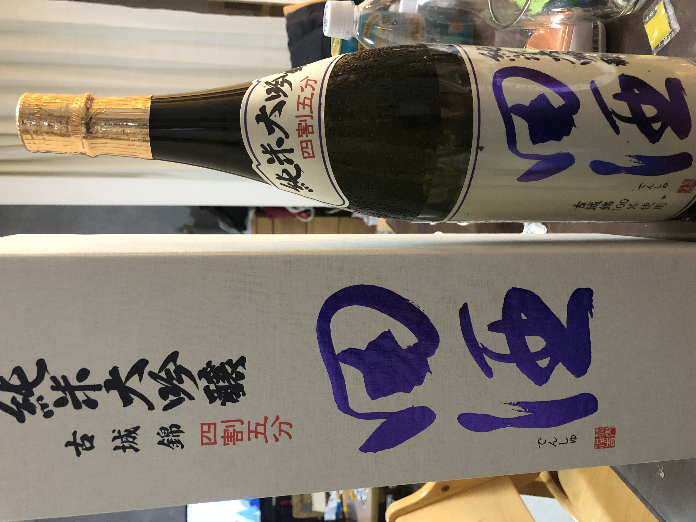

日々の終わりに、日本酒を味わう贅沢な時間
我が家にとって日本酒は、夫婦共通のいちばんの趣味です。週末はもちろん、日々の仕事や家事が一段落したあとに、新しく手に入れた一本を夫婦で開けて「これはすっきりしていて美味しいね」「この料理にすごく合う！」などと語り合う時間を何より大切にしています。
ただ飲むだけでなく、そのお酒が作られた地域の気候、蔵人さんのこだわり、その日の器や料理との相性をあれこれ探求するのが、とても楽しくて心地よい時間になっています。
一期一会の記録

新政 陽乃鳥 (2024) / 亜麻猫 (2023)
★★★★★秋田の革新的な蔵元・新政酒造 chimneys の贅沢な2本並べ。貴醸酒である「陽乃鳥」の濃密でマンゴーのような甘みと、白麹仕込みの「亜麻猫」が持つ柑橘系の突き抜けるような酸味。この全く異なるふたつの個性を夫婦で少しずつグラスに注ぎ、交互に飲み比べながら、その奥深い世界観に酔いしれる贅沢な夜でした。

獺祭 純米大吟醸 磨き二割三分 生
★★★★★日本酒の限界に挑む精米歩合23%の獺祭、しかも貴重な「生酒」バージョン。開けた瞬間に広がる華やかで綺麗な香りと、蜂蜜のように滑らかで雑味が一切ない透明感。家事が一段落した週末、少し良いおつまみを用意して口に含んだ瞬間、夫婦揃って思わず笑みがこぼれてしまうほどの感動がありました。

名倉山 大吟醸 (限定品)
★★★★☆福島の銘醸蔵が醸す、華やかなデザインが目を引く限定の大吟醸。すっきりとした綺麗な口当たりの中に、大吟醸らしいフルーティーな含み香が心地よく広がります。この日は枝豆や唐揚げといった定番の家飲みメニューと合わせましたが、料理の油っぽさを綺麗に流してくれる、引き立て上手な一杯でした。

新政 緋乃鳥 / 玄乃鳥 (2024)
★★★★★特別頒布会で登場した新政の「緋乃鳥」と「玄乃鳥」の、外遊びでの至高の飲み比べ。グラスに注がれた瞬間の淡い琥珀色の美しさに目を奪われます。複雑で複層的な甘みを持つ緋乃鳥と、どこかクラシカルでありながら洗練された酸を宿す玄乃鳥。職人のこだわりを夫婦であれこれ考察しながら飲む時間は、まさに探求の醍醐味です。

十四代 純米大吟醸 播州愛山
★★★★★日本酒の最高峰ブランド・十四代の、希少米「愛山」を使用した純米大吟醸。原価酒蔵で見つけて迷わず注文した一杯です。愛山特有の妖艶で濃厚な甘みと旨みが一瞬で口の中を満たし、その後はまるで手品のようにスッと消えていく完璧なキレ。圧倒的な完成度に、夫婦でただただ感嘆するばかりでした。

狼炎 ROUEN 純米60
★★★★☆滋賀の矢尾酒造が醸す、ダークでエネルギッシュなラベルが印象的なお酒。外飲みでの一期一会の出会いでした。そのワイルドな見た目とは裏腹に、お米本来のどっしりとした旨みが生きた硬派な純米酒。濃いめの味付けの料理やお肉料理と合わせることで真価を発揮する、じっくり腰を据えて飲みたくなる一杯です。

水芭蕉 純米吟醸 生貯蔵酒 [春酒]
★★★★☆群馬の尾瀬の雪解け水を思わせる、水芭蕉の季節限定の「春酒」。ピンクのボトルと桜のひらひらが季節の訪れを感じさせてくれます。みずみずしく軽快な口当たりで、ほんのりとした優しい甘さが広がる、まさに春の穏やかな気候にぴったりの味。夫婦で季節の移り変わりを愛おしみながら楽しんだ、心地よい1本です。

栄光冨士 寿限無 ~JUGEMU~ 純米大吟醸
★★★★☆山形の人気蔵・栄光冨士が福岡産の酒米「寿限無」で醸した、ピンクのメタリックラベルが眩しい無濾過生原酒。しぼりたてならではのピチピチとした微炭酸感と、メロンのように濃厚でジューシーな甘みが特徴的。フルーティーなお酒が大好きな我が家にはストライクな、非常に満足感の高い1本でした。

郷宝 (GOHHOU) 特別純米 きたしずく
★★★★☆北海道・函館地方に新設された酒蔵として注目を集める「郷宝」の、幾何学的なブルーラベル。北海道の酒米「きたしずく」を使い、非常にクリアで冷涼な大自然を思わせるスマートな仕上がり。すっきりとしたキレの中に優しい米のニュアンスがあり、旅の情景を思い浮かべながら夫婦で語らうのに最高の1本です。

田酒 純米大吟醸 古城錦 四割五分
★★★★★青森の銘醸・西田酒造店が、幻の酒米と呼ばれる「古城錦」を45%まで磨き上げた最高峰の純米大吟醸。重厚な化粧箱からボトルを取り出す瞬間から、特別な夜が始まります。上品で穏やかな香りと、お米の芯にある気品溢れる旨み。贅沢な和食に合わせ、一口一口を慈しむように夫婦でじっくりと堪能しました。